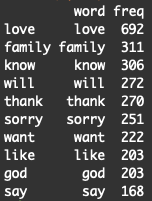
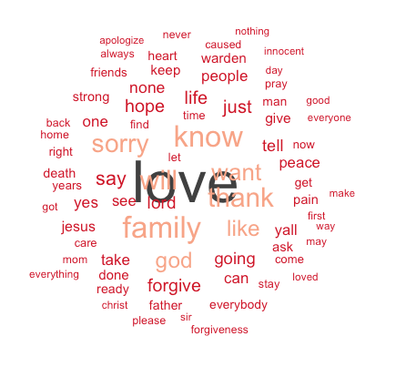
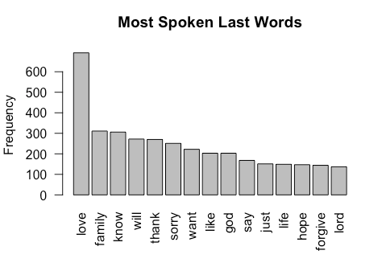

A Kaggle data source here provides the public with information on Texas death row inmates from 1982 to 2017. It includes name, age, race, county, date, and last words from each person. We will analyze this using R to conduct text analysis.
Let’s load up tidytext to get started and then pull in the text data file.
# Set up tidytext
require(tidytext)
# Set working directory
setwd("~/Desktop/R/TX_Executions/text/")
# Load dataset
offenders <- read.table("Last_Statement.txt")
# offenders <- readLines(file.choose())
head(offenders)

Next, we’re going to load additional libraries and convert the text document into a text corpus.
# Load other packages
require(dplyr)
require(ggplot2)
require(wordcloud)
require(stringr)
require(tm)
require(SnowballC)
require(RColorBrewer)
# Convert text to corpus
lastWords <- Corpus(VectorSource(offenders))
Text analysis often requires a fair amount of processing. We’ll do that here.
# Clean up text
toSpace <- content_transformer(function (x , pattern ) gsub(pattern, " ", x))
lastWords <- tm_map(lastWords, toSpace, "/")
lastWords <- tm_map(lastWords, toSpace, "@")
lastWords <- tm_map(lastWords, toSpace, "\\|")
lastWords <- tm_map(lastWords, toSpace, "\x89")
lastWords <- tm_map(lastWords, toSpace, "xdb")
lastWords <- tm_map(lastWords, toSpace, "xcf")
lastWords <- tm_map(lastWords, toSpace, "xe5")
lastWords <- tm_map(lastWords, toSpace, "xca")
# Convert the text to lower case
lastWords <- tm_map(lastWords, content_transformer(tolower))
# Remove numbers
lastWords <- tm_map(lastWords, removeNumbers)
# Remove english common stopwords
lastWords <- tm_map(lastWords, removeWords, stopwords("english"))
# Remove punctuations
lastWords <- tm_map(lastWords, removePunctuation)
# Eliminate extra white spaces
lastWords <- tm_map(lastWords, stripWhitespace)
With the cleaned-up text, we’ll want to create a term document matrix (TDM).
# Construct term document matrix
dtm <- TermDocumentMatrix(lastWords)
m <- as.matrix(dtm)
v <- sort(rowSums(m),decreasing=TRUE)
d <- data.frame(word = names(v),freq=v)
head(d, 10)

Now, we’re in a spot where we can start to analyze the data-set. We’re going to create a word cloud that shows the 75 most frequently used words (while also ensuring each word shown is used at least 20 times).
# Create word cloud
set.seed(1234)
wordcloud(words = d$word, freq = d$freq, min.freq = 20,
max.words=75, random.order=FALSE, rot.per=0.00,
colors=brewer.pal(4, "RdGy"))

We see that love stands out. There are other themes such as religion (faith, god, jesus, lord and christ) and remorse (forgive, pain and sorry).
To simplify this further, we can construct a bar chart that shows the top ten words used.
# Plot word frequencies
# Bar chart
barplot(d[1:15,]$freq, las = 2, names.arg = d[1:15,]$word,
col ="grey", main ="Most Spoken Last Words",
ylab = "Frequency")

This shows the same information as the word cloud, but defines the rank and order with more detail.
[THE END]